Documentação · versão 1.2.0
Manual técnico do projeto
API de e-commerce em microsserviços com JavaScript e Node.js. Este manual cobre a instalação, cada tela da loja, a arquitetura, o OAuth2, os contratos, a API, a configuração, como estender o projeto, os testes e a solução de problemas.
O que é o Cesto, o que ele cobre e com que tecnologias foi feito.
O Cesto é uma API de e-commerce dividida em microsserviços e escrita em JavaScript (módulos ES, Node.js 22.18 ou mais novo). Ela cobre o caminho inteiro de uma loja: catálogo, estoque, carrinho, pedido, pagamento e notificações. Junto vem uma interface web em React que usa a mesma API que qualquer outro cliente usaria.
O projeto tem três usos: base para uma loja real, referência de arquitetura (eventos, saga, outbox, OAuth2, contratos com Zod) e material de estudo. Tudo sobe com um comando e já vem com dados de demonstração.
| Camada | Tecnologia | Papel |
|---|---|---|
| Linguagem | JavaScript (módulos ES), com JSDoc leve | Todo o back-end, os contratos e a interface, sem etapa de compilação |
| Execução | Node.js 22.18 ou mais novo | Cada serviço roda o próprio src/main.js direto; o cliente Prisma gerado é carregado com a remoção de tipos nativa do Node |
| HTTP | Fastify 5, @fastify/http-proxy, @fastify/rate-limit | Serviços, gateway e limite de requisições |
| Validação | Zod 4 | Entrada, saída, eventos e configuração |
| Persistência | Prisma 7 + PostgreSQL 16 (adapter pg) | Um banco por serviço, migrações versionadas |
| Mensageria | Redis 7 Streams + ioredis | Eventos, carrinho e rate limit |
| Segurança | jose (JWT RS256, JWKS), scrypt | Tokens e senhas |
| Interface | React 19 (JSX), Vite 7, Lucide; Literata, Public Sans e IBM Plex Mono | Loja, painel e página de serviços |
| Infraestrutura | Docker Compose, Nginx | Execução local e em servidor |
| Qualidade | Vitest, teste ponta a ponta, GitHub Actions | Testes e integração contínua |
A marca é um cesto montado com blocos: os serviços independentes formando uma loja. A logo é preta e branca, com cantos retos. A interface e este manual seguem a ideia de um catálogo impresso: papel claro, tinta escura, títulos com serifa e pouca cor. A cor fica para o que precisa chamar a atenção: a ação principal, um status, um erro.
| Cor | Hex | Uso |
|---|---|---|
| Papel | #F4EFE6 | Fundo da interface, quadros e tabelas |
| Tinta | #1F201C / #5B574E | Texto principal e secundário, títulos, preços |
| Folha | #2E5E43 | Ação primária, links, réguas dos títulos, pedido confirmado |
| Palha | #C99A3E / #7A5410 | Etiquetas e destaques: aguardando pagamento, estoque baixo |
| Beterraba | #9E2F4C | Só estados de perigo: erro, cancelado, sem estoque |
Os títulos usam Literata, o texto usa Public Sans e códigos, SKUs e identificadores usam IBM Plex Mono. As três são auto-hospedadas em apps/web/public/fonts, com os arquivos de licença OFL, e são as mesmas deste manual.
Cada produto de demonstração tem uma ilustração própria em apps/web/public/produtos/<slug>.svg, todas no mesmo estilo: objeto centralizado, formas chapadas com poucos tons, traço fino, o mesmo fundo neutro e uma sombra de contato discreta. A interface usa o imageUrl do produto; se ele estiver vazio, tenta a ilustração do slug; se a imagem não carregar, mostra um espaço neutro com um ícone de caixa.
A API, os bancos, as migrações e os eventos continuam iguais aos da 1.1.0. Mudam a linguagem do código e a interface.
src/ com node, sem etapa de compilação e sem a pasta dist/; os pacotes exportam src/index.js; os contratos continuam em Zod, com JSDoc nos pontos de entrada. Saíram o typecheck, os tsconfig, o tsc e o tsx; entrou o npm run check. O Node.js 22.18 ou mais novo é o mínimo, porque o cliente Prisma gerado (src/generated/prisma/client.ts) é importado direto pelo Node, que remove os tipos ao carregar..jsx.orders, inventory, payments) e o motivo quando o pedido cai; Comprar de novo devolve os itens ao carrinho./health do gateway a cada 5 segundos e mostra cada serviço, o Redis e o tempo de resposta.Os dois manuais em PDF foram refeitos com o mesmo visual, a partir das fontes HTML em docs/fonte/.
Da primeira execução com Docker até deixar a loja no ar com HTTPS.
Com Docker, basta o Docker com Docker Compose (no Windows, o Docker Desktop). Para desenvolver sem Docker: Node.js 22.18 ou mais novo, PostgreSQL 16 e Redis 7. Os onze contêineres precisam de cerca de 2 GB de memória livre.
iniciar.cmd. No Linux ou macOS, rode ./iniciar.sh..env a partir do .env.example, com uma senha aleatória para o banco e um segredo aleatório para os serviços.http://localhost:8080.A primeira construção baixa as dependências e leva alguns minutos. As seguintes reaproveitam o cache.
| Papel | Senha | Pode | |
|---|---|---|---|
| Administrador | admin@cesto.dev | Cesto@2026 | Tudo, incluindo produtos, estoque e expedição |
| Cliente | cliente@cesto.dev | Cesto@2026 | Carrinho, guardados, pedidos e notificações |
Os nomes, os produtos e o domínio cesto.dev são fictícios. Para trocar a senha das contas de demonstração, altere DEMO_PASSWORD antes da primeira execução.
docker compose ps # estado dos contêineres docker compose logs -f orders inventory # acompanhar a saga docker compose restart payments # reiniciar um serviço docker compose up -d --scale inventory=3 # mais consumidores de eventos docker compose down # parar (mantém os dados) docker compose down -v # parar e apagar bancos e Redis
Com o PostgreSQL e o Redis rodando na máquina e o .env preenchido:
npm ci npm run generate # gera o cliente Prisma de cada serviço npm run migrate # aplica as migrações nos seis bancos npm run dev # sobe os oito serviços com recarga automática npm run dev -w apps/web # interface em http://localhost:5173
Não há etapa de compilação: npm run dev roda node --watch src/main.js em cada serviço, e npm run start:local roda node src/main.js, sem recarga. A API fica em http://localhost:8000. O único build que resta é o da interface (npm run build, que só existe em apps/web, com o Vite), usado na imagem Docker do contêiner web.
.env, defina SEED_DEMO=false antes da primeira execução, com o banco vazio.WEB_REDIRECT_URIS e CORS_ORIGINS com o endereço público, por exemplo https://loja.exemplo.com/callback.cesto_auth:
docker compose exec postgres psql -U cesto -d cesto_auth \ -c "UPDATE users SET role = 'ADMIN' WHERE email = 'voce@empresa.com';"
Coloque um proxy com HTTPS (Caddy, Traefik ou Nginx) na frente da porta APP_PORT. O contêiner web já encaminha /api, /oauth, /.well-known e /health para o gateway. O gateway confia nos cabeçalhos X-Forwarded-* para registrar o IP real e aplicar o rate limit por cliente.
O que cada tela da loja e do painel mostra, o que dá para fazer nela e de qual serviço vêm os dados.
Lista os produtos ativos, cada um com a sua ilustração, seção, SKU, etiqueta de preço e saldo. Os dados vêm do catalog; o saldo de cada produto vem do inventory. Produtos sem estoque continuam visíveis, mas não podem ser adicionados ao carrinho.
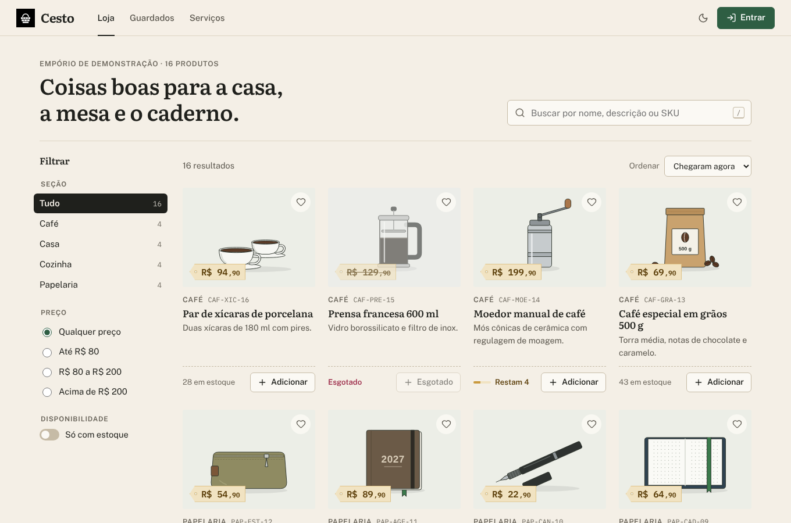
Clicar num produto abre um painel com a ilustração grande, a descrição, o SKU, o preço e o saldo. Ali dá para escolher a quantidade antes de adicionar ao carrinho e guardar o produto. Esc fecha o painel.
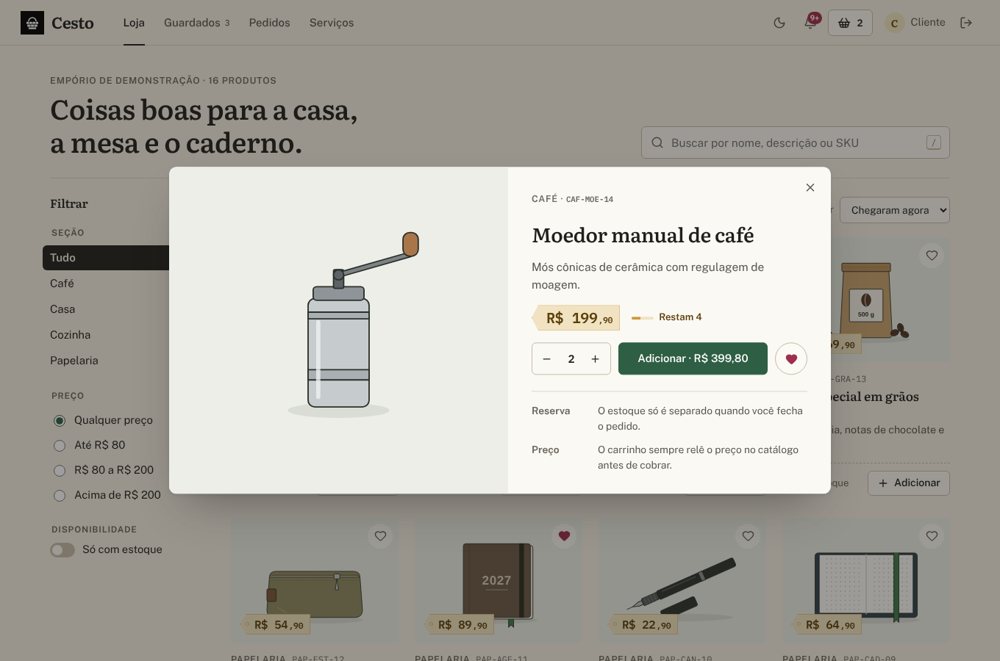
Lista os produtos guardados com o botão Guardar, com preço e saldo atuais, o botão Adicionar ao carrinho em cada um e Pôr tudo no carrinho para a lista inteira. A lista fica no navegador (localStorage, chave cesto.guardados.<id do usuário>), separada por usuário: não vai para o servidor e não aparece em outro aparelho.
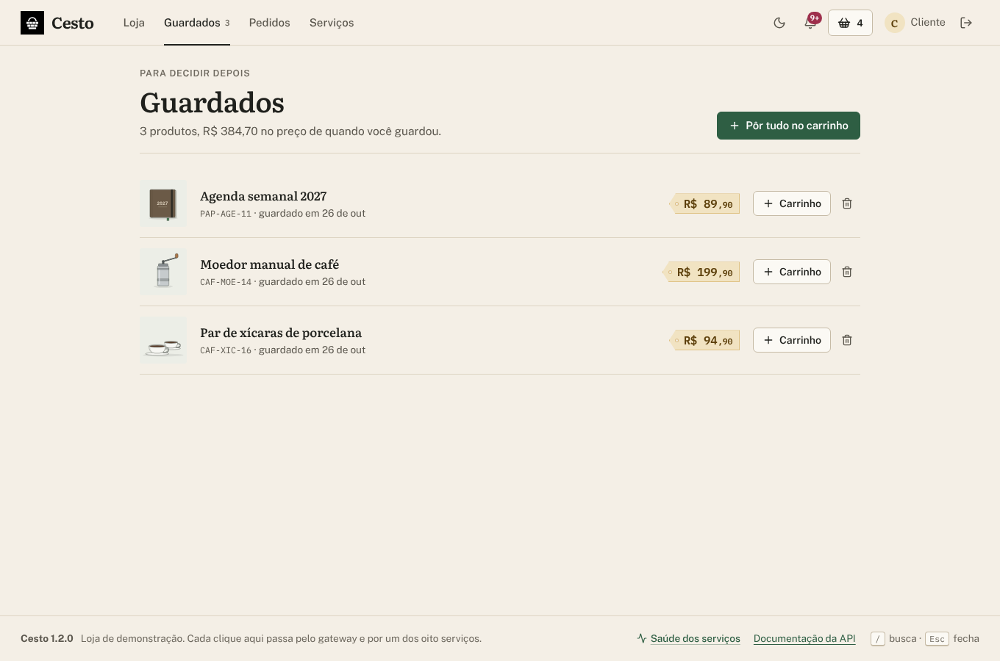
A tela de entrada faz o fluxo Authorization Code com PKCE: gera o code_verifier, envia o desafio S256 junto com o e-mail e a senha, recebe o código e troca pelo token. O cadastro cria um cliente e já faz o login.
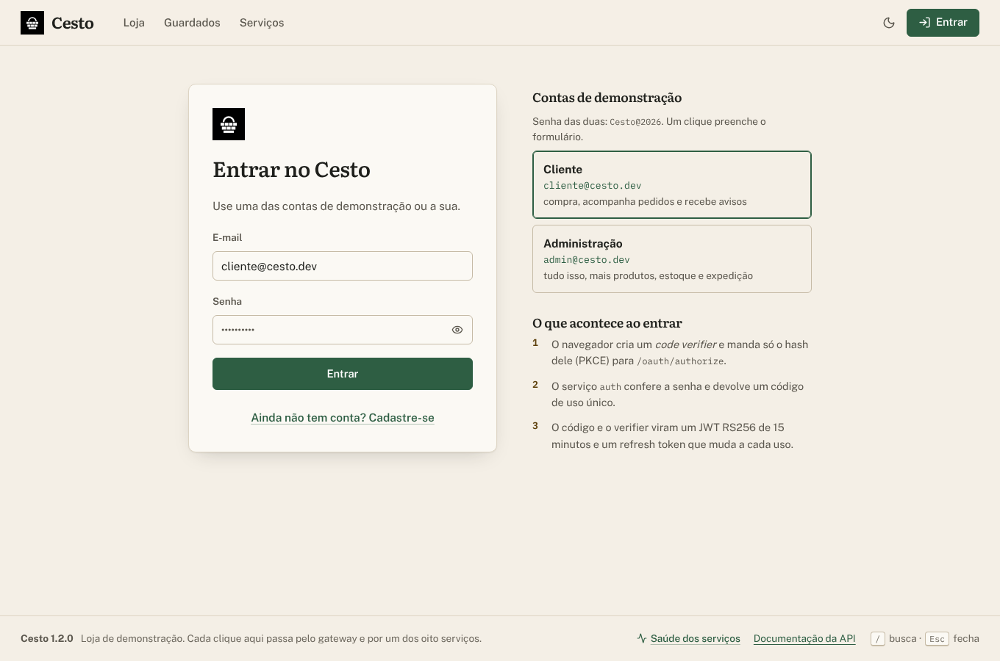
O carrinho abre num painel lateral em formato de cupom: cada linha com miniatura, quantidade e subtotal, e o total no pé. Guardar para depois tira o item do carrinho e o coloca em Guardados. O carrinho (serviço cart, no Redis) guarda só o produto e a quantidade; preços e nomes são lidos do catálogo a cada consulta, então o cliente sempre vê o valor atual.
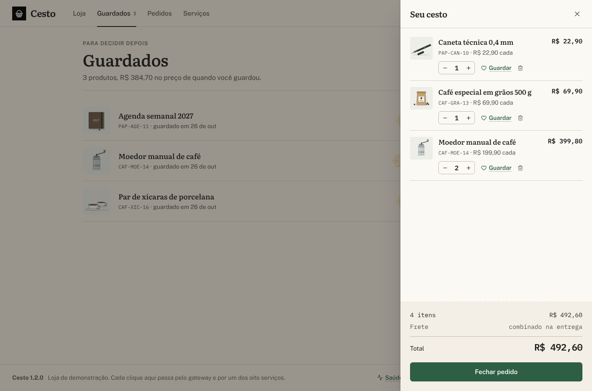
O checkout tem três etapas, e dá para voltar a qualquer uma antes de confirmar:
cesto.endereco) e já o preenche.POST /api/v1/orders, resposta 202) e começa a saga.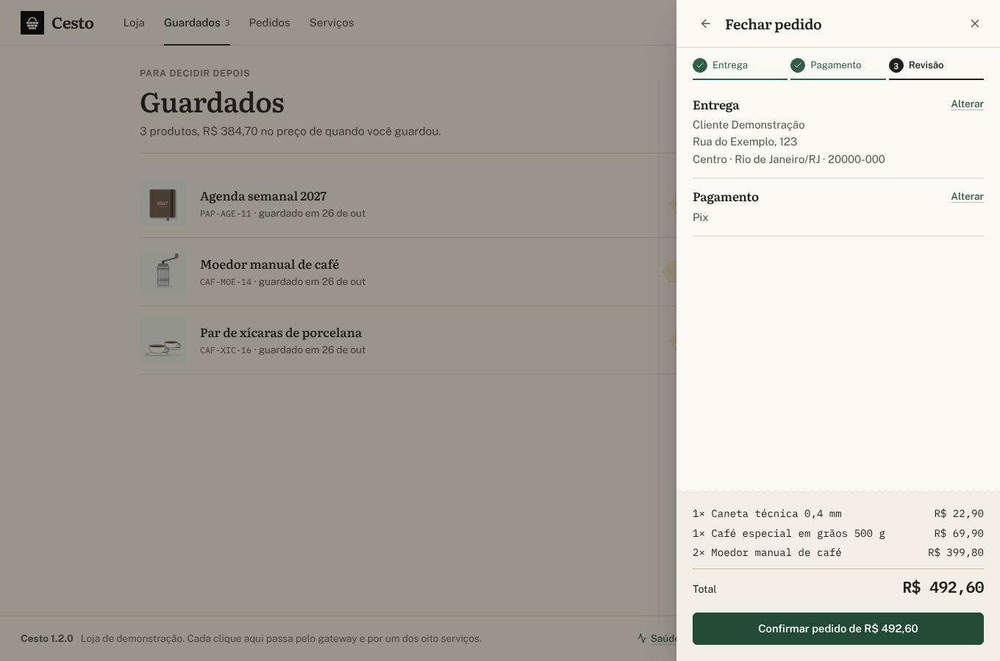
Cada pedido mostra os itens com miniatura, o total e a trilha da saga: cada etapa com o horário e o serviço que cuidou dela (orders recebe o pedido, inventory reserva o estoque, payments cobra, orders confirma). Quando o pedido cai, a trilha mostra o motivo (falta de estoque, pagamento recusado, cancelamento). A tela se atualiza sozinha enquanto há pedidos em andamento.
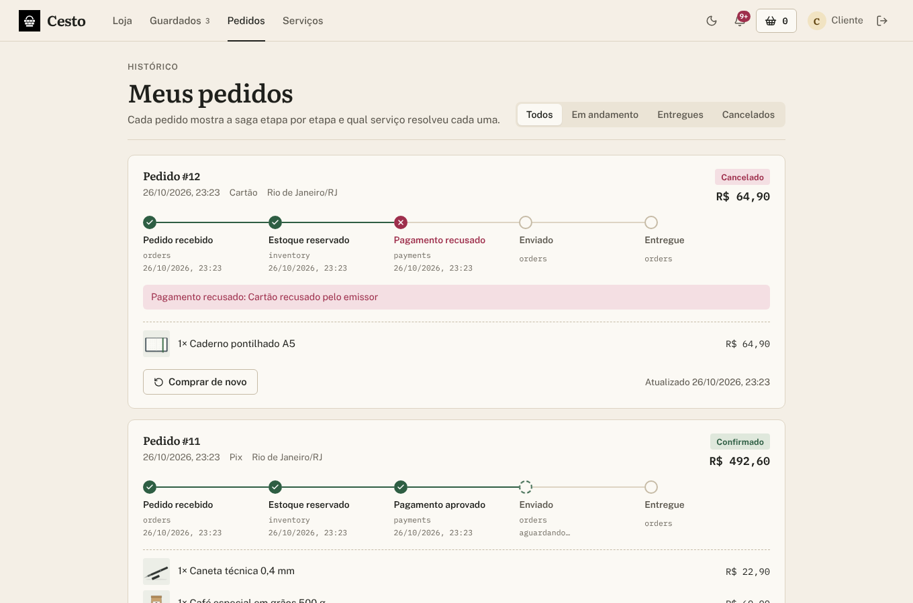
Cada evento importante vira uma notificação: boas-vindas, pedido recebido, confirmado, cancelado, pagamento recusado, enviado e entregue. O sino mostra quantas ainda não foram lidas. Os dados vêm do serviço notifications.
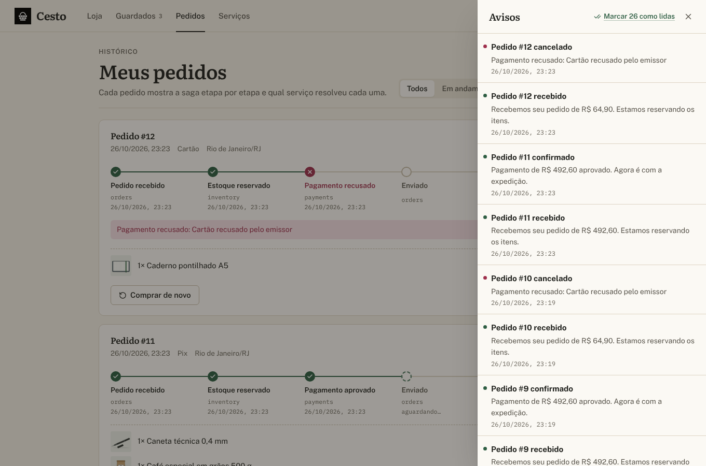
Só aparece para administradores. No topo ficam os indicadores: receita confirmada, ticket médio, pedidos para enviar e produtos com estoque baixo.
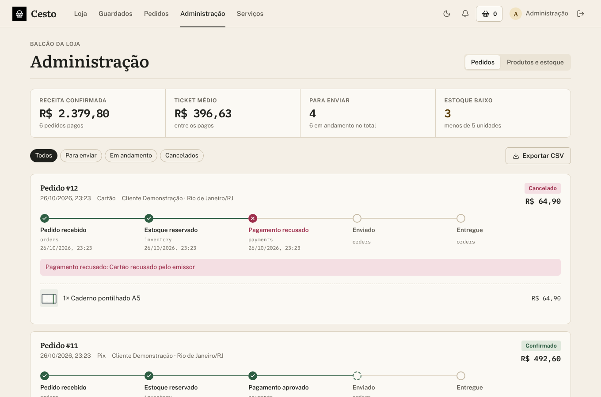
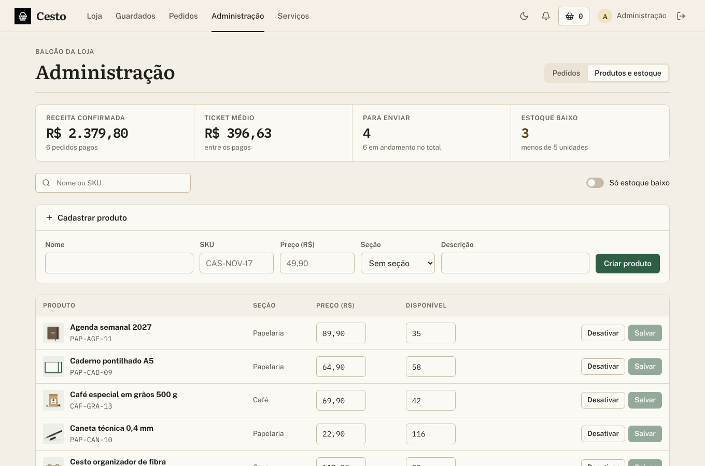
Página pública, sem login, com a saúde de cada um dos oito serviços e do Redis. Os dados vêm de GET /health no gateway, que faz um ping no Redis e consulta o /health de cada serviço com limite de 2 s. A página mostra o estado de cada um, o tempo de resposta do gateway e o histórico das últimas 30 consultas. Ela se atualiza sozinha a cada 5 s, então serve para acompanhar um serviço que está subindo ou reiniciando.
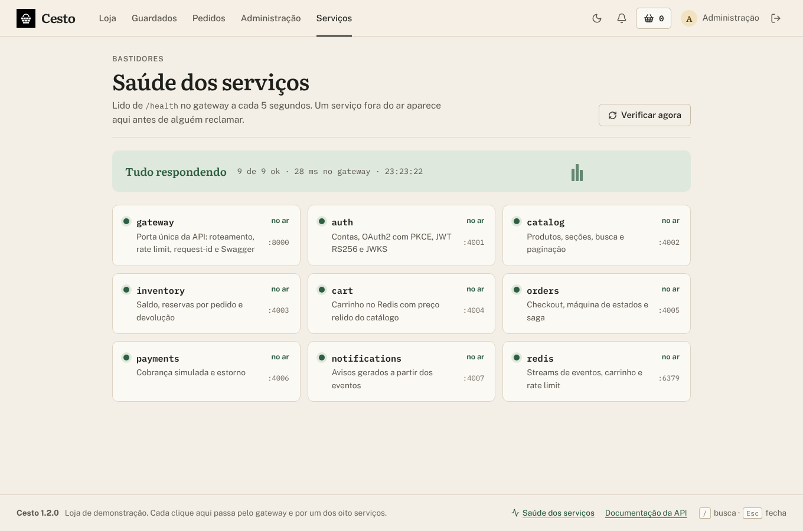
O botão no cabeçalho alterna entre tema claro e escuro. Até a pessoa escolher, a interface segue o tema do sistema; a escolha fica no navegador (chave cesto.tema). Atalhos de teclado: / vai para a busca e Esc fecha painéis (carrinho, notificações, visualização rápida).
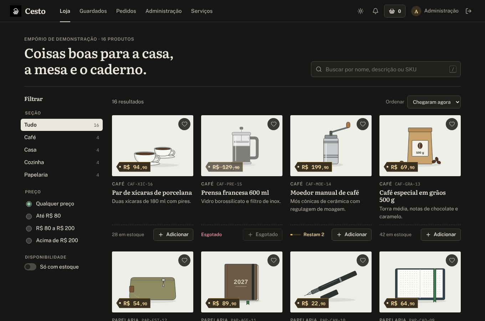
A interface se adapta a telas pequenas: a loja, os filtros, o carrinho, os pedidos e o painel funcionam no celular com os mesmos recursos da versão para computador.
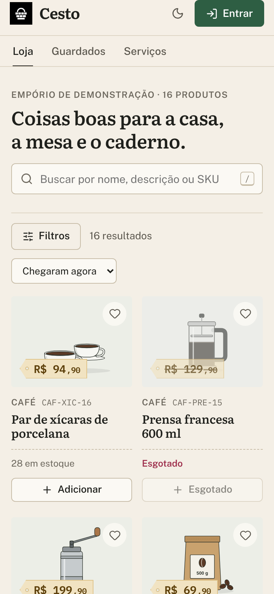
Os serviços, o caminho de uma requisição e a saga que transforma um carrinho em pedido.
| Serviço | Porta | Banco | Publica | Consome |
|---|---|---|---|---|
| gateway | 8000 | nenhum | nada | nada |
| auth | 4001 | cesto_auth | user.registered | nada |
| catalog | 4002 | cesto_catalog | product.created, product.updated | nada |
| inventory | 4003 | cesto_inventory | inventory.reserved, inventory.rejected | product.*, order.placed, order.confirmed, order.cancelled |
| cart | 4004 | Redis | nada | order.placed |
| orders | 4005 | cesto_orders | order.*, payment.requested | inventory.*, payment.approved, payment.declined |
| payments | 4006 | cesto_payments | payment.approved, payment.declined | payment.requested, order.cancelled |
| notifications | 4007 | cesto_notifications | nada | user.registered, order.* |
Cada serviço é dono dos seus dados. Nenhum serviço lê o banco de outro: quando precisa de um dado alheio, chama a API interna com um token de serviço ou reage a um evento.
O gateway acrescenta um x-request-id que acompanha a requisição em todos os logs e volta na resposta. Rotas /internal/* nunca são expostas pelo gateway.
Caixas arredondadas são estados do pedido; caixas retas são os serviços que reagem aos eventos. As linhas tracejadas são os caminhos de falha.
| Situação | O que acontece |
|---|---|
| Falta estoque | inventory.rejected cancela o pedido sem mexer no saldo |
| Pagamento recusado | payment.declined cancela o pedido e order.cancelled devolve a reserva |
| Cliente cancela antes do pagamento | O pedido é cancelado e a reserva volta para o saldo |
| Loja cancela um pedido confirmado | O estoque baixado volta e o pagamento é estornado |
| Pagamento aprovado depois do cancelamento | O pedido continua cancelado e o pagamento é estornado |
| Mecanismo | Como funciona |
|---|---|
| Outbox | O evento é gravado na tabela outbox_events na mesma transação da mudança. Um relay publica no Redis e marca como publicado. Se o Redis cair, nada se perde. |
| Deduplicação | Quem consome grava o id do evento em processed_events na mesma transação do efeito. Entregas repetidas são ignoradas. |
| Grupos de consumidores | Cada serviço lê com XREADGROUP. Várias réplicas dividem o trabalho. |
| Novas tentativas | Mensagem não confirmada é reivindicada com XCLAIM depois de 15 s. Depois de 5 entregas, vai para cesto:events:dead-letter com o motivo. |
| Concorrência no estoque | A reserva usa UPDATE ... WHERE available >= quantidade numa transação, e o banco ainda impede saldo negativo com CHECK. |
packages/contracts/ esquemas Zod, auxiliares de DTO, rotas, eventos, cliente HTTP,
dados de demonstração (exporta src/index.js)
packages/core/ createService, route, verificação de JWT, erros de domínio,
outbox, OpenAPI, paginação (exporta src/index.js)
packages/bus/ EventBus em Redis Streams (exporta src/index.js)
services/<nome>/src/ main.js (composição), env.js (configuração), db.js (Prisma),
regras do domínio; roda direto, sem build
services/<nome>/src/generated/prisma/
cliente Prisma gerado por npm run generate (fora do Git)
services/<nome>/prisma/ schema.prisma e migrações
services/<nome>/test/ testes do serviço
apps/web/src/ App.jsx, pages/, components/, api.js, styles.css
docker/ Dockerfiles, nginx.conf, start.sh, postgres/init.sql
scripts/ dev.mjs, migrate.mjs, generate.mjs, smoke.mjs, clean.mjs
docs/ manuais em PDF, imagens e fonte/ (HTML dos manuais)
Como a interface e os serviços obtêm tokens, e o que cada escopo libera.
| Fluxo | Quem usa | Detalhes |
|---|---|---|
| Authorization Code + PKCE (S256) | Interface web (cesto-web, cliente público) | Código de uso único, válido por 60 s, preso ao redirect_uri e ao desafio |
| Refresh Token | Interface web | Rotação a cada uso; reuso de um token antigo revoga a família inteira |
| Client Credentials | Serviços (cesto-internal) | Escopo internal, token em cache até 30 s antes de expirar |
code_verifier aleatório e calcula code_challenge = BASE64URL(SHA256(verifier)).POST /oauth/authorize com client_id, redirect_uri, code_challenge, state, e-mail e senha. A resposta traz o code e o mesmo state.POST /oauth/token com grant_type=authorization_code, o code e o code_verifier.access_token (JWT, 15 min), refresh_token (30 dias) e os escopos concedidos.{ "access_token": "eyJhbGciOiJSUzI1NiIsImtpZCI6...", "token_type": "Bearer",
"expires_in": 900, "refresh_token": "...",
"scope": "orders:read orders:write cart:write notifications:read" }
O endpoint de token aceita JSON ou application/x-www-form-urlencoded e responde erros no formato do RFC 6749 ({"error": "invalid_grant", "error_description": "..."}).
| Escopo | Cliente | Administrador | Libera |
|---|---|---|---|
| cart:write | sim | sim | Alterar o carrinho |
| orders:read | sim | sim | Ver pedidos e pagamentos |
| orders:write | sim | sim | Fechar e cancelar pedidos próprios |
| notifications:read | sim | sim | Notificações |
| catalog:write | não | sim | Produtos e categorias |
| inventory:write | não | sim | Ajustar estoque |
| orders:manage | não | sim | Enviar, entregar e cancelar qualquer pedido |
| internal | não | não | Rotas internas (só serviços) |
Cada rota declara no contrato o tipo de acesso (public, user, admin ou service) e os escopos exigidos. A verificação acontece antes do handler.
signing_keys. A chave pública fica em GET /oauth/jwks.O pacote packages/contracts é a única fonte da verdade das rotas, dos DTOs e dos eventos.
Os contratos são esquemas Zod em JavaScript. O mesmo esquema valida em tempo de execução a entrada e a saída de cada rota, gera o OpenAPI e alimenta o cliente HTTP usado pela interface, pelos serviços e pelo teste ponta a ponta. Não há tipos de compilação: quando ajuda a leitura, as funções têm comentários JSDoc leves (@param, @returns), que o editor usa para completar código.
| Auxiliar | Para que serve |
|---|---|
| paginated(schema) | Esquema de página com items, page, pageSize, total e totalPages |
| toPage(items, total, page, pageSize) | Monta a página a partir de uma consulta |
| envelope(schema) | União discriminada { ok: true, data } ou { ok: false, error } |
| success(schema) / failure | Os dois lados do envelope, separados |
| ok(value) / err(error) | Retorno de sucesso ou falha sem exceção |
Cada rota é declarada uma vez com defineEndpoint: método, caminho, resumo, tags, tipo de acesso e os esquemas de params, query, body e response. buildPath preenche os parâmetros do caminho (/orders/:id) e buildQuery monta a query string.
export const api = { catalog: { getProduct: defineEndpoint({ method: 'GET', path: '/api/v1/catalog/products/:id', summary: 'Detalhe do produto', tags: ['catalog'], auth: 'public', params: IdParams, response: ProductDto }) } }; route(app, api.catalog.getProduct, ({ params, principal }) => catalog.get(params.id, isAdmin(principal))); const product = await request(api.catalog.getProduct, { params: { id } });
route valida params, query e body com Zod, converte tipos (?page=2 vira número), checa o token, o papel e os escopos, chama o handler, valida a saída e devolve no envelope. Campos extras são recusados (z.strictObject). Como não há compilador, essa validação em tempo de execução, mais os testes, é o que garante que o handler e o cliente concordam com o contrato.
| Código | HTTP | Quando |
|---|---|---|
| VALIDATION_FAILED | 422 | Entrada inválida, com a lista de campos |
| UNAUTHENTICATED | 401 | Sem token, token inválido ou expirado |
| FORBIDDEN | 403 | Papel ou escopo insuficiente (details.missing) |
| NOT_FOUND | 404 | Registro inexistente ou de outro usuário |
| CONFLICT | 409 | Duplicidade (SKU, slug, e-mail) |
| INSUFFICIENT_STOCK | 409 | Saldo insuficiente |
| INVALID_STATE_TRANSITION | 409 | Mudança de status não permitida |
| EMPTY_CART | 422 | Checkout com carrinho vazio |
| PAYMENT_DECLINED | 402 | Cobrança recusada |
| RATE_LIMITED | 429 | Limite do gateway |
| UPSTREAM_UNAVAILABLE | 503 | Serviço vizinho fora do ar |
| INTERNAL | 500 | Falha inesperada (detalhes só no log) |
Erros do Prisma também são traduzidos: P2002 vira CONFLICT e P2025 vira NOT_FOUND.
eventSchemas associa cada nome de evento a um esquema Zod. bus.publish('order.placed', payload) valida o payload antes de publicar, e o handler de bus.subscribe recebe o payload já validado. Na leitura, o envelope é validado de novo; payload inválido vai direto para a dead-letter.
Convenções, todas as rotas públicas e exemplos com curl.
http://localhost:8080 (pela interface) ou http://localhost:8000 (gateway direto).priceCents, totalCents) e datas em ISO 8601.page e pageSize (máximo 100)./api/docs e especificação em /api/openapi.json, geradas dos contratos.{ "ok": true, "data": { "items": [ ... ], "page": 1, "pageSize": 20, "total": 16, "totalPages": 1 } }
{ "ok": false, "error": { "code": "VALIDATION_FAILED", "message": "Dados inválidos",
"details": [ { "path": "pageSize", "message": "Too big: expected number to be <=100" } ],
"requestId": "..." } }
| Método e rota | Acesso | O que faz |
|---|---|---|
| POST /oauth/authorize | público | Login com PKCE, devolve o código |
| POST /oauth/token | público | Troca código, refresh ou credenciais por token |
| POST /oauth/revoke | público | Revoga a família do refresh token |
| GET /oauth/jwks | público | Chaves públicas |
| POST /api/v1/auth/register | público | Cadastro de cliente |
| GET /api/v1/auth/me | usuário | Usuário atual |
| GET /api/v1/catalog/products | público | Busca: q, category, minPrice, maxPrice, sort, page, pageSize |
| GET /api/v1/catalog/products/{id} | público | Detalhe |
| POST /api/v1/catalog/products | admin | Cria produto |
| PATCH /api/v1/catalog/products/{id} | admin | Atualiza campos |
| DELETE /api/v1/catalog/products/{id} | admin | Desativa |
| GET/POST /api/v1/catalog/categories | público / admin | Lista e cria categorias |
| GET /api/v1/inventory?productIds= | público | Saldos |
| PUT /api/v1/inventory/{id} | admin | Define o disponível |
| GET /api/v1/cart | usuário | Carrinho com preços atuais |
| POST /api/v1/cart/items | usuário | Adiciona |
| PATCH /api/v1/cart/items/{productId} | usuário | Altera quantidade (0 remove) |
| DELETE /api/v1/cart | usuário | Esvazia |
| POST /api/v1/orders | usuário | Checkout (202) |
| GET /api/v1/orders | usuário | Lista; scope=all para admin |
| GET /api/v1/orders/{id} | usuário | Detalhe com histórico |
| POST /api/v1/orders/{id}/cancel | usuário | Cancela antes do pagamento |
| PATCH /api/v1/orders/{id}/status | admin | SHIPPED, DELIVERED ou CANCELLED |
| GET /api/v1/payments/orders/{orderId} | usuário | Pagamentos do pedido |
| GET /api/v1/notifications | usuário | Lista (unread=true) |
| GET /api/v1/notifications/unread | usuário | Contador |
| POST /api/v1/notifications/{id}/read | usuário | Marca como lida |
| POST /api/v1/notifications/read-all | usuário | Marca todas |
| GET /health | público | Saúde do Redis e de cada serviço: 200 com status: "ok" ou 503 com "degraded" (usada pela página Serviços) |
curl "http://localhost:8080/api/v1/catalog/products?q=caf%C3%A9&sort=price_asc"
curl -X POST http://localhost:8080/oauth/token -H "Content-Type: application/json" \
-d '{"grant_type":"refresh_token","refresh_token":"<refresh>","client_id":"cesto-web"}'
curl -X POST http://localhost:8080/api/v1/cart/items -H "Authorization: Bearer $TOKEN" \
-H "Content-Type: application/json" -d '{"productId":"<id>","quantity":2}'
curl -X PATCH http://localhost:8080/api/v1/orders/<id>/status -H "Authorization: Bearer $ADMIN" \
-H "Content-Type: application/json" -d '{"status":"SHIPPED","note":"Coletado"}'
curl http://localhost:8080/health
O arquivo scripts/smoke.mjs faz o fluxo inteiro (PKCE, carrinho, pedido, recusa, falta de estoque, refresh, administração) e serve de exemplo de cliente.
Todas as variáveis do .env e o que revisar antes de abrir a loja ao público.
| Variável | Padrão | O que faz |
|---|---|---|
| APP_PORT | 8080 | Porta da interface |
| GATEWAY_PORT | 8000 | Porta da API direta |
| DB_USER / DB_PASSWORD | cesto / sem padrão | Credenciais do PostgreSQL |
| DB_HOST / DB_PORT | localhost / 5432 | Banco no desenvolvimento sem Docker |
| REDIS_URL | redis://localhost:6379 | Redis no desenvolvimento sem Docker |
| SERVICE_CLIENT_ID / SERVICE_CLIENT_SECRET | cesto-internal / sem padrão | Cliente OAuth2 entre serviços |
| AUTH_ISSUER / AUTH_AUDIENCE | cesto-auth / cesto-api | Emissor e público dos JWT |
| ACCESS_TOKEN_TTL | 900 | Validade do access token (s) |
| REFRESH_TOKEN_TTL | 2592000 | Validade do refresh token (s) |
| WEB_REDIRECT_URIS | http://localhost:8080/callback | Endereços de retorno permitidos (vírgulas) |
| CORS_ORIGINS | http://localhost:8080 | Origens aceitas (vírgulas) |
| SEED_DEMO | true | Dados de demonstração |
| DEMO_PASSWORD | Cesto@2026 | Senha das contas de demonstração |
| PAYMENT_DECLINE_ABOVE_CENTS | 500000 | Recusa cobranças acima deste valor |
| PAYMENT_DELAY_MS | 800 | Latência simulada do pagamento |
| RATE_LIMIT_MAX / RATE_LIMIT_WINDOW | 300 / 1 minute | Limite por IP no gateway |
| LOG_LEVEL | info | fatal, error, warn, info, debug, trace ou silent |
O .env.example também traz http://localhost:5173 em WEB_REDIRECT_URIS e CORS_ORIGINS, para a interface do npm run dev. Cada serviço valida a própria configuração com Zod ao iniciar (src/env.js) e para com uma mensagem clara se algo estiver faltando.
DB_PASSWORD e SERVICE_CLIENT_SECRET (os scripts já geram).SEED_DEMO=false e uma conta de administrador própria.WEB_REDIRECT_URIS / CORS_ORIGINS com o domínio real./health são públicos; se não quiser expor o estado interno, bloqueie /health no proxy.Onde mexer para acrescentar rotas, eventos, serviços e um provedor de pagamento.
packages/contracts/src/api.js, reaproveitando ou criando esquemas em domains/.route(app, api.catalog.novaRota, handler).npm run dev recarrega sozinho). Não há compilação: o handler, o cliente da interface e o OpenAPI passam a conhecer a rota na hora.eventSchemas (packages/contracts/src/events.js).outbox(tx, createEnvelope('nome.evento', payload)).bus.subscribe({ 'nome.evento': ... }) usando a deduplicação por processed_events.services/ e troque o nome no package.json.cesto_novo em docker/postgres/init.sql, ajuste o schema.prisma e gere a migração com npx prisma migrate dev dentro da pasta do serviço.workspaces, em scripts/dev.mjs, scripts/generate.mjs e scripts/migrate.mjs.docker-compose.yml e o prefixo em services/gateway/src/routes.js./** @implements {PaymentGateway} */ export class MeuProvedor { name = 'meu-provedor'; /** @param {ChargeRequest} request @returns {Promise<ChargeResult>} */ async charge(request) { ... } /** @param {string} reference @param {number} amountCents */ async refund(reference, amountCents) { ... } }
A classe precisa ter name, charge e refund, como o SimulatedGateway de services/payments/src/gateway.js. Troque new SimulatedGateway(...) por new MeuProvedor(...) em services/payments/src/main.js. A chave de idempotência enviada é o id do pedido.
imageUrl (caminho ou URL de até 500 caracteres). Sem ele, a interface procura apps/web/public/produtos/<slug>.svg; se não achar, mostra um espaço neutro..design/ilustracoes/gerar.py.apps/web/src/styles.css.apps/web/public/fonts, com os arquivos de licença OFL.docs/images/logo.svg e apps/web/public/favicon.svg.docs/fonte/ com node docs/fonte/gerar_pdfs.mjs (requer o Playwright com o Chromium).O que cada comando de teste cobre e o que a integração contínua executa.
| Comando | O que cobre |
|---|---|
| npm test | Contratos (URLs, DTOs, esquemas, eventos), núcleo HTTP (validação, envelope, JWT, papéis, escopos, mapeamento de erros), outbox, saga e preços, PKCE e escopos, carrinho, notificações |
| TEST_REDIS_URL=... npm test | Inclui o barramento com Redis real: entrega, confirmação e nova tentativa |
| npm run check | node --check em todos os arquivos .js e .mjs de packages/, services/ e scripts/ (erros de sintaxe) |
| npm run smoke | 21 verificações ponta a ponta com a API rodando |
Sem compilador, os erros que o TypeScript pegava antes aparecem agora nos testes e na validação dos contratos em tempo de execução. Rode npm test antes de cada commit.
A cada push na main e a cada pull request, o GitHub Actions (.github/workflows/ci.yml, Node.js 22) instala as dependências com npm ci --ignore-scripts, gera os clientes Prisma (npm run generate), constrói a interface (npm run build, que só existe em apps/web), roda npm run check e os testes com PostgreSQL e Redis reais, cria os bancos com docker/postgres/init.sql, aplica as migrações, sobe os oito serviços com npm run start:local, executa o teste ponta a ponta (npm run smoke) e constrói as duas imagens Docker. Os serviços não têm etapa de compilação.
Sintomas comuns, a causa provável e onde procurar quando algo não bate.
| Sintoma | Causa provável | Como resolver |
|---|---|---|
defina DB_PASSWORD no .env | .env ausente | Rode o script de início ou copie o .env.example |
| Porta 8080 ocupada | Outro programa na porta | Troque APP_PORT no .env |
Login devolve invalid_grant sobre redirect_uri | Endereço diferente do cadastrado | Inclua o endereço em WEB_REDIRECT_URIS e reinicie o auth |
| Pedido parado em Reservando | inventory parado ou sem Redis | docker compose logs inventory, /health ou a página Serviços |
| 401 em todas as rotas depois de trocar as chaves | Tokens antigos | Saia e entre de novo |
| Configuração inválida ao iniciar | Variável ausente ou fora do formato | A mensagem diz qual; corrija no .env |
| Eventos na dead-letter | Handler falhou 5 vezes | XRANGE cesto:events:dead-letter - + mostra o evento e o motivo |
| Prisma não encontra o cliente | Clientes não gerados | npm run generate |
SyntaxError ou ERR_UNKNOWN_FILE_EXTENSION ".ts" ao iniciar um serviço | Node.js anterior ao 22.18, sem remoção de tipos | Use o Node.js 22.18 ou mais novo (node -v) |
| Guardados ou endereço sumiram | Outro navegador ou dados do site apagados | Ficam só no navegador; não há cópia no servidor |
GET /health no gateway mostram o Redis e cada serviço.service e reqId; filtre pelo x-request-id da resposta.XINFO GROUPS cesto:events:order.placed mostra as pendências por serviço.SELECT * FROM outbox_events WHERE published_at IS NULL mostra os eventos que ainda não saíram.